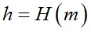
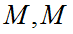
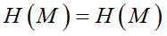
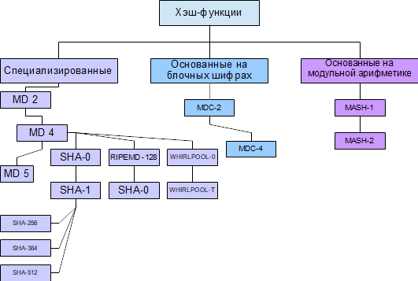
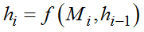
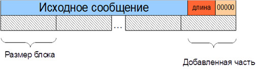

4.3.1. Структура и свойства хэш-функций
4.3.1. Структура и свойства хэш-функций
Хэш-функции − это семейство однонаправленных функций, которые применяются к сообщению произвольной длины и возвращают хэш-значение фиксированной длины. Обозначается хэш-функция как .
Кроме того, хэш-функции должны обладать следующими свойствами:
1) легко вычислить хэш-значение h для любого сообщения m;
2) трудно подобрать такое M, чтобы получить заданное h;
3) зная M, трудно подобрать такое M, для которого  ;
;
4) трудно подобрать два произвольных сообщения таких, что .
Если хотя бы одно из этих требований не выполняется, то такую хэш-функцию использовать нельзя, так как она не обладает необходимой криптостойкостью. Примитивами, удовлетворяющими только первому требованию, являются представители семейства алгоритмов контрольной суммы (CRC8 CRC16, CRC32 и т. д.) (иногда они ошибочно тоже называются хэш-функциями). Эти функции не являются криптографическими и не могут использоваться в криптографических системах.
Случай, когда два разных сообщения имеют одинаковое хэш-значение −  − называется коллизией. Обычно хэш-функции имеют длину от 16 до 64 байт. Для любой хэш-функции всегда существуют бесконечное количество коллизий. Это связано с тем, что мощность множества всех возможных значений хэш-функции намного меньше пространства всех возможных сообщений, для которых хэш-функцию можно вычислить. Отсюда же следует необратимость хэш-функций в общем случае. Несмотря на существование большого количества коллизий, обычно они равномерно распределены в огромном пространстве всех возможных значений хэш-функции (). Поэтому найти пару сообщений с одинаковым значением хэш-функции является сложной задачей, которую невозможно выполнить с использованием современных вычислительных средств.
− называется коллизией. Обычно хэш-функции имеют длину от 16 до 64 байт. Для любой хэш-функции всегда существуют бесконечное количество коллизий. Это связано с тем, что мощность множества всех возможных значений хэш-функции намного меньше пространства всех возможных сообщений, для которых хэш-функцию можно вычислить. Отсюда же следует необратимость хэш-функций в общем случае. Несмотря на существование большого количества коллизий, обычно они равномерно распределены в огромном пространстве всех возможных значений хэш-функции (). Поэтому найти пару сообщений с одинаковым значением хэш-функции является сложной задачей, которую невозможно выполнить с использованием современных вычислительных средств.
Из определения хэш-функции следует, что она необратима, но существует возможность с помощью полного перебора или перебора по словарю определить, для какого сообщения была вычислена эта хэш-функция. В этом случае, для каждого значения из словаря вычисляется хэш-функция и сравнивается с имеющейся. В случае совпадения исходное сообщение (или составляющее с ним коллизию), от которого вычислялась хэш-функция, найдено. Очевидно, что такие возможности ограничены переборными возможностями криптоаналитика и априорной информацией о возможном исходном сообщении.
Основной задачей хэш-функции является получение уникального идентификатора («отпечатка пальца») сообщения и при этом невозможность для криптоаналитика сфабриковать сообщение с заданным значением хэша. Отличия в подходах к решению приведенной задачи обусловили разнообразие видов криптографических хэш-функций, объединенных в три основных класса (рис. 4.16).
 |
Рис. 4.16. Классификация хэш-функций |
Как правило, хэш-функции обрабатывают данные блоками фиксированной длины (рис. 4.17), при этом значение хэша вычисляется как . Изначально сообщение дополняется до целого количества блоков следующим образом.
 |
Рис. 4.17. Разделение данных на блоки для вычисления хэш-функции |
Хэш-функции могут быть как самостоятельно спроектированными алгоритмами, так и основанными на других криптографических примитивах. Так, например, широкое распространение получили хэш-функции, построенные на основе блочных шифров. Возможно построение хэш-функций на основе асимметричных алгоритмов, но они обладают малым быстродействием, поэтому используются редко, также существуют схемы с использованием поточных шифров. На практике обычно используются специально спроектированные хэш-функции.
Современными алгоритмами хеширования являются:
− MD5 (не рекомендуется к использованию, так как были найдены многочисленные коллизии);
− HAVAL;
− SHA256, SHA512, RIPEMD-160;
− TIGER;
− PANAMA;
− WHIRLPOOL и др.